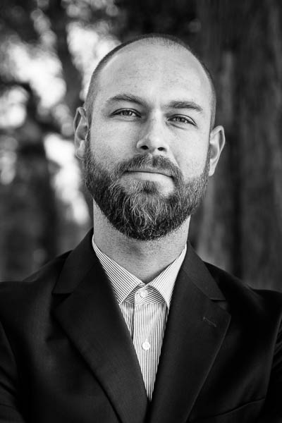

My working station is a Lenovo Thinkpad X1 Carbon, i7-3667U, 8GB RAM and 256GB SSD, almost half of it absorbed by my DropBox. My software setup is more conservative and certainly needs refurbishment (if habits weren't that settled). While I use RStudio mainly for teaching purposes, I still stick to the interplay of Notepad++ and R via Npp2R in my daily workflow. Besides I write in LaTeX (with TexStudio or RStudio) and use Beamer for presentations.
In order to keep up with my favorite blogs I use Feedly in Chrome and Reeder on the iPhone. It's hard to identify resources on the Web that I like most. r-bloggers.com and planetr.stderr.org keep me on track with updates from the R community, and the Guardian Datablog and FiveThirtyEight.com are incredibly informative and inspiring sources of data journalism. For leisure I regularly follow the obscure (German) hodgepodge of Internet curiosities at schleckysilberstein.com and the retro games podcast stayforever.de. Other fantastic podcasts I listen to from time to time are 99% Invisible and This American Life.
My workflow these days is heavily centered on the R language for accessing, reshaping and analyzing data. The standard R GUI for Mac suits me well enough for most of my R-related tasks, but when it comes to developing packages, I prefer the comfort and built-in tools of the RStudio IDE. System-wise I feel at home with any type of UNIX-like OS and my XPS 13 Dell Developer Laptop uses Linux Ubuntu accordingly.

Peter Meissner is a top notch useR who loves pushing code.
Peter is a nine-to-fiver who works best in the evening (around 6 pm). Peter's developer personality is very similar to Laurent Gatto's but Laurent is more of a pusher. There is also an uncanny similarity between Peter's activity stream and those of michbur,robertzk, andrie, and iagomosqueira. It seems like Peter is-or should be-friends with timelyportfolio. With this in mind, it's worth noting that timelyportfolio is a less serious forker. There is also an obvious connection between Peter and Hadley Wickham, arturochian, Winston Chang, and Kun Ren.
These days, Peter is most actively contributing to the repositories: petermeissner/wikipediatrend, petermeissner/diffr and petermeissner/idep.
(Text Source: osrc.dfm.io With credits to: The Open Source Report Card was built by Dan Foreman-Mackey based on event data from the GitHubtimeline. Want more information?)
My interest in web scraping began while I was working on my master’s thesis. I investigated the effects of the Eastern enlargement of the European Union on policy preferences in the European Parliament using parliamentary speeches. To avoid having to collect the data by hand, I took a detour and learned some Python. While I had previously worked with R, it never occurred to me to use it for anything besides statistical analysis. I have since learned of all the great tools that have been implemented in R for interacting with the web. As I prefer not to switch too much between languages I have gradually shifted my web scraping tasks to R and do so almost exclusively at this point.